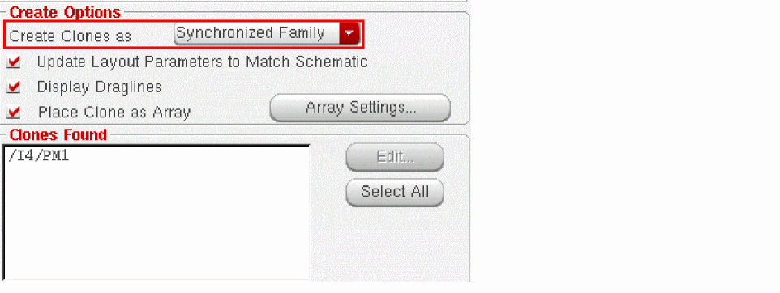
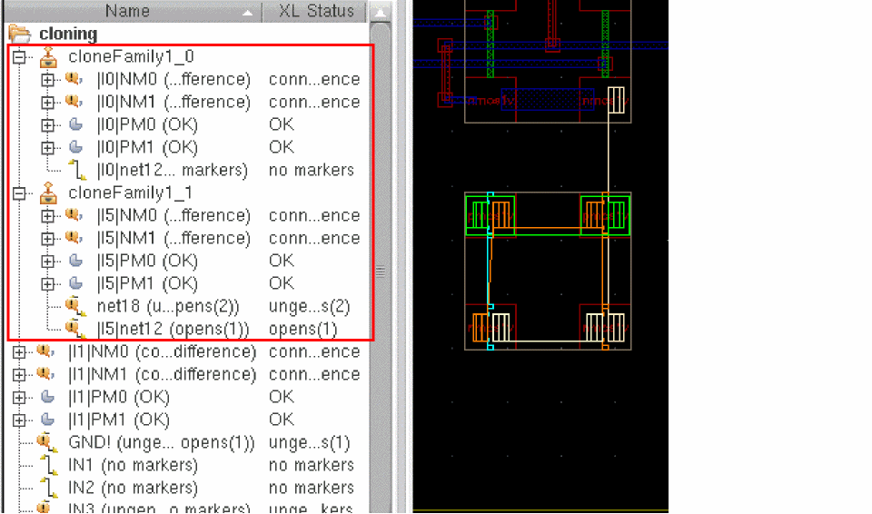
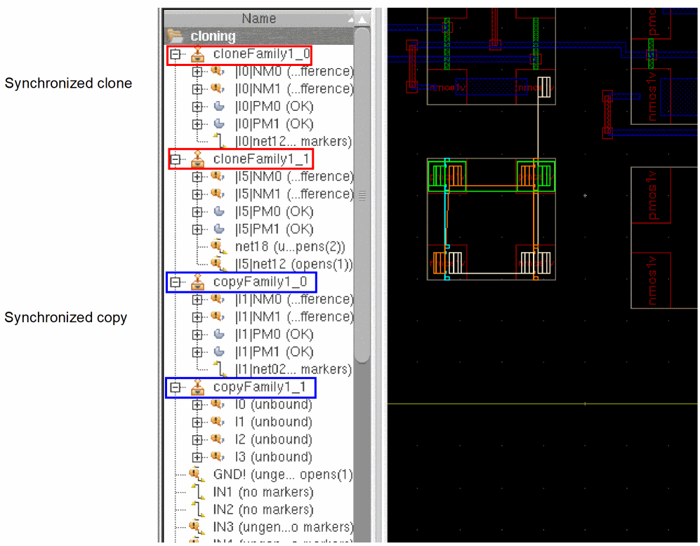
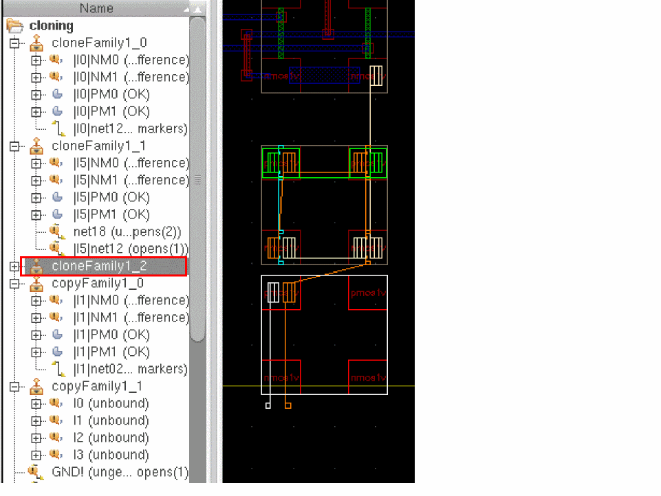

Generating a Family of Synchronous Clones
To generate a family of synchronous clones:
-
Create a list of matching targets using the steps described in Clone Source Selection and Target Search and Generation.
The matching targets are displayed at the bottom of the Generate Clones form in the Clones Found pane. -
Choose Synchronized Family from the Create Clones as drop-down list.
 - From the list of clones found, select all the target structures you want to include in the synchronized family.
-
Move your cursor into the layout canvas and click once to generate each of the clones you selected.
If the synchronous family you are creating contains only one group, Layout XL uses this existing group to implement the synchronous clone. This prevents the creation of an unnecessary level of hierarchy.
The clone source and the target clones are generated as two synchronized clone groups that can be identified in the Navigator assistant by their unique names, such ascloneFamily1_0andcloneFamily1_1in the figure below.
-
Each synchronous clone name begins with the prefix cloneFamily, unless the source is a group. In that case, the generated synchronized clones have names that carry the name of the source group. If the source group is named as
myDiffPair, the generated clones are named asmyDiffPair_1,myDiffPair_2, and so on. -
A synchronous clone group created using the Generate Clones form can be differentiated from a synchronous copy that is created using the Create Cluster Boundary Form form by its name. A synchronous clone gets a cloneFamily prefix, while a synchronous copy gets as a copyFamily prefix, as displayed in the figure below.
 -
Each synchronous clone name begins with the prefix cloneFamily, unless the source is a group. In that case, the generated synchronized clones have names that carry the name of the source group. If the source group is named as
-
To verify whether the generated clone families are correctly synchronized, choose the Connectivity – Update – Clone Families command to display the Update Close Families form, as shown in the figure below. Select the clone family to check and click the Verify Synchronization button. To check synchronization for all the clone families, leave the clone families deselected and click Verify Synchronization,
You cannot undo the changes you make using the Update Clone Families form.
The CIW issues a message indicating whether or not the verified clone families are synchronized.
You can also use the Update Clone Families form to add or remove clone members, rename the clone family, or delete the clone family.
Related Topics
Return to top